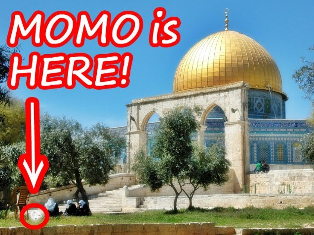
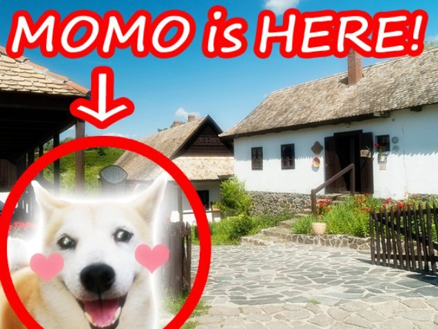
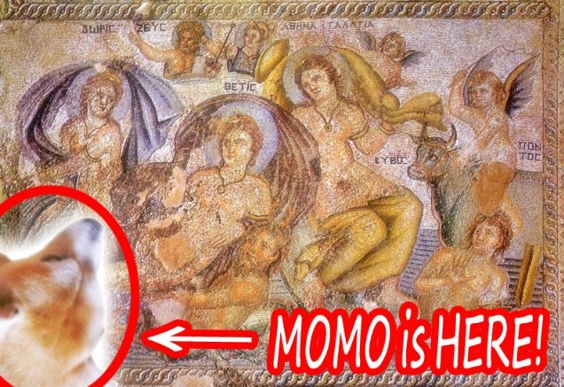
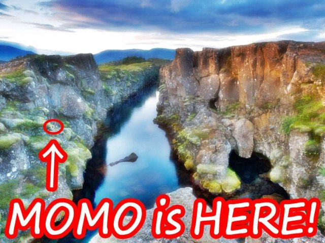

| モモの世界遺産旅行記: 世界編 Vol.076-101 (The BBB: Breakthrough Bandwagon Books) | |
| モモ | |
| The BBB: Breakthrough Bandwagon Books (2016) | |
（邦題『モモの世界遺産旅行記 : 世界編 Vol.076-101 』）
Written by Momo
Translated by Tanya
Cover p hoto by Momo
Cover design by Tanya
C opyright © 2016 Momo / The BBB : Breakthrough Bandwagon Books
All rights reserved.
ISBN: 978-1-365-42578-3
76. 軍艦島
モモは、ターニャさんやターニャさんのお母さんとクリスマス・ホリデーを過ごすために、久しぶりに日本に帰って来ました。
ターニャさんはモモを、長崎県の羽島炭坑に連れて来てくれました。
別名「軍艦島」としても知られている場所で、 2015 年に新しく世界遺産に登録された「明治日本の産業革命遺産」の構成要素でもあります。
船でその島に近づきながら、モモは、かつてそこで暮らしていた人たちのことを考えました。
「ねえ、モモ。こっち見て！」
モモは話しかけられて振り返ると、ターニャさんがデジカメのシャッターを切りました。
予想外な変顔と なってしまったので、乗船していた人たち から楽しそうな笑いが湧き起こりました 。
77. エルサレムの旧市街とその城壁群
今日は、世界遺産になっている『エルサレムの旧市街とその城壁群』にやって来ました。
街の中を散歩していると、いろんな人に会いました。
白いローブを着た人たち、黒いヴェールの女の人たち、長い鬚の黒い服の男の人たちなどです。
モモは、美しい芝生を見つけて、そこを走り回りました。
とても良い天気でしたので、芝生の上に寝て転がるのは、とても気持ちが良かったです。
陽射しに照らされた「岩のドーム」を見上げると、スカーフを巻いた女性たちが、モモにやさしく話しかけてきました。
彼女たちによると、ここは、世界平和を真剣に祈る地球上すべての人にとっての聖地なのだそうです。
平和が続きますように、モモも祈りました。

78. ペトラ遺跡
今日は、ヨルダンの世界遺産のひとつ、「ペトラ遺跡」に、やって来ました。
それは、ヨルダン南部の砂漠に数千年前に建てられた巨大な遺跡です。
「インディ・ジョーンズ」シリーズのような有名映画にも登場したことがあるそうです。
およそ 100 メートルほどの高さの絶壁が、向かい合っています。
その谷間を、深く狭い通路が 1.5 キロメートルも続いています。
モモは、その薄暗い通路を抜け、ついに、エル・カズネと言われる精巧につくられたモニュメントに辿り着きました。
入口の近くで、モモは、ラクダさんが気持ち良く寝ているのを見つけました。
あいさつしようとした時、ラクダさんが大きな声でクシャミしました。
「ふぅ......驚いたぁ！」
79. シルクロード
ある日、世界遺産のひとつであるシルクロードの砂漠をモモが歩いていると、ラクダさんたちと旅行しているキャラバンに出会いました。
キャラバンの人たちはモモに、細かい刺繍や 組み紐で編まれたブレスレット やピアス など、美しい品々を見せてくれました。
彼らは、それを次のオアシスで売るのだそうです。
夜になると、気温が急激に下がって、とても肌寒い風が吹きます。
モモは寒がりなので、震えていました。
でも、キャラバンの人たちがモモを彼らのテントに招いてくれたので、モモは暖かく、幸せな夜を過ごすことができたのでした。
80. バーミヤン渓谷
今日は、アフガニスタンの世界遺産、「バーミヤン渓谷の文化的景観と古代遺跡群」に、やって来ました。
石の絶壁にある巨大な空洞をモモが見上げていると、地元の人たちが、以前はここに 55 メートルもの巨大な仏像が立っていたんだよ、と教えてくれました。
ですが、その仏像は人間同士の紛争の最中に完全に破壊されてしまったらしく、今は、ただ空洞がそこにあるだけです。
その仏像はどんなに素晴らしかっただろう、と想像しながら、 失われてしまったことを 、モモは、とても悲しく思いました。
81. ロッカ・グアイタ
今日は、標高約 750 メートルのティターノ山の山頂にある、サンマリノ共和国のロッカ・グアイタに、やってきました。
ここは、世界最古の共和国で、世界で 5 番目に 小さい 国なのだそうです。
この要塞の先端に辿り着くのには、ずいぶん時間がかかりました。
そこからは、美しい絶景を見渡せます。
今、モモは世界を見下ろしています！
「とっても綺麗！だけど......」
突然、モモは恐怖を感じて、震え始めました。彼女は雲に手が届きそうな 、とても高い場所にいたのです。
「きゃーーーーーっ、怖いっ！」
ぶるぶるぶるぶる......
82. プリトヴィツェ湖群国立公園
今日は、クロアチアの世界遺産、プリトヴィツェ湖群国立公園に、やって来ました。
エメラルドグリーンの湖の素晴らしい景色を観ながら、モモは、川のせせらぎや、鳥たちのさえすぎりに癒されました。
公園内で、オシャレなスカーフをしたレンジャーさんたちと出会いました。
彼らは親切にも、そのスカーフは、ドゥブロヴニクのお店で買えると教えてくれました。
彼らによると、スカーフを巻く彼らの風習が、ネクタイの起源だと言われているそうです。
巻き毛の尻尾を振りながら、モモは、決意しました。
「せっかくだから、ピンクのスカーフを探したいな 」
ピンクは、日本語では「モモ」と言うのです。
83. ホッローケー
今日は、ハンガリーの世界遺産のひとつ、ホッローケーの美しい村に、やってきました。
この小さな村には、およそ 300 人ほどの人が住んでいるようです。
白い壁の可愛らしい家が建ち並んでいます。
刺繍が施されたエプロスドレスをまとった女性たちが、モモのために、伝統的な民族舞踊を披露してくれました。
モモは前脚で彼女たちの手を取って、くるくる回りながら一緒に踊りました。
「わあ、世界が 回ってる ！とっても面白い！」
モモは、あまりにも速く回転しすぎて、ついには、クラクラしてしまいました。

84. ステウンス・クリント
今日は、デンマークの世界遺産のひとつ、ステウンス・クリントという断崖絶壁に、やってきました。
現地の人たちによると、 15 キロメートルもの長さがあり、約 6,500 万年前に宇宙から飛んできた隕石でつくられたそうです。
その長さだけでなく、その白い絶壁の美しさも、モモに強い印象を与えました。
驚いたことに、その同じ隕石が、恐竜さんたちを絶滅させたと考えられているそうです。
モモは空を見上げるのが大好きです。
でも、 宇宙のお星さまのひとつが地球に墜ちてきたらどうしよう、と、 ちょっと 心配になりました。
85. サンスーシー宮殿
今日は、ドイツのポツダムの綺麗な宮殿に、やってきました。
サンスーシーという名前のこの宮殿は、ドイツの世界遺産のひとつだそうです。
この宮殿を建てさせた王様、フリードリヒ２世さんは、この国にジャガイモ栽培を普及させた方でもあるそうです。
実は、モモは、茹でたジャガイモにバターと醤油をかけて食べるのが大好物です。
モモは、ジャガイモとバターを出してくれるレストランを探そうと思いました。
でも、ひとつ気がかりがあります。
「そのお店に、醤油はあるかしら ？」
モモは、醤油を持ってこ なかったことを後悔しました。
86. ロック・アイランド
今日は、世界遺産になっている西太平洋のロック・アイランドの南部ラグーンを見るために、西太平洋の島国パラオに、やってきました。
ラグーンを泳いでいると、ジュゴンのお姫様が、話しかけてきました。
お姫様は、海の王国だけでなく、水上の世界でも人間さんたちから、人魚として愛されているのだそうです。
彼女と一緒に泳げるのは、とても光栄で、モモは幸せでした。
「わあ、海の中の世界って綺麗！とっても感動的！」
87. ホイアン
今日は、ベトナムの世界遺産のひとつ、古都ホイアンに、やってきました。
美しいランタンに彩られた古い街並を歩いていると、小麦粉の良い匂いが漂ってきました。
その香りに誘われて、「カオラウ」と読める看板が出ている屋台に辿り着きました。
カオラウというのは、その屋台でスープと一緒に提供される麺のことのようです。
屋台を経営している中年のお母さんが、モモが食べられるように、親切にも麺を細かく刻んでくれました。
カオラウは、うどんのように適度にもちもちしていて、とても美味しかったです。
「お母さん、おかわり、 くださ〜い！ 」
88. オルホン渓谷
今日は、モンゴルの世界遺産のひとつ、オルホン渓谷に、やってきました。
果てしなく続くかのような広大な草原を歩きながら、モモは、羊さん、山羊さん、お馬さんたちから成る大家族に会いました。
大家族の皆さんは、ゲルと呼ばれるテントで暮らしながら、季節ごとに草原地帯を移動しているのだそうです。
その時、モモは、なじみのある日本語のかけ声を聞きました。
「はっけよーい、のこった！」
それは、相撲の試合が始まる時の合図でした。
モモが目をやると、羊の男の子たちが相撲を楽しんでいました。
「わあ！いい試合！がんばって！」
89. サガルマータ国立公園
今日は、ネパールの世界遺産のひとつ、サガルマータ国立公園に、やってきました。
この地域は、 2015 年 4 月 25 日に発生した大地震で被害を受けました。
現地の人たちは少しずつ平穏を取り戻しつつあるようですが、まだ復旧は進んでいません。
モモは、 2011 年に起こった 東日本大震災 の悲劇 を、よくおぼえています。
世界でいちばん高い 山のひとつであるエベレストは、地震にも似た大陸の移動で生まれた のだそうです。
自然の不思議に感銘を受けたモモは、この素晴らしい山々 を堪能するために、エベレストに 挑戦したいと思いました 。
90. アル・ジャヒリ城塞
今日は、アラブ首長国連邦の世界遺産のひとつ、アル・ジャヒリ城塞に、やってきました。
この砂漠には、見渡す限り、影ひとつありません。
焼けつくような陽射しの下を歩いて、モモは、ついに、アル・ジャヒリ城塞に辿りつきました。
この城塞は、アラビア語で「泉」を意味するのだという「アル・アイン」という場所にあります。
モモは、とってもノドが渇いていたので、それは、まさにオアシスだと感じられました。
「わあ！冷たい水で、生き返る！」
91 . ヴィクトリアの滝
今日は、世界三大瀑布のひとつ、ヴィクトリアの滝に、やってきました。
それは、ジンバブエとザンビアの国境に位置していて、両方の国の世界遺産として登録されているようです。
地元の人たちは、それを、現地語で「モシ・オ・トゥニャ」と呼んでいます。
モモは以前、世界三大瀑布の他のふたつ、イグアスの滝と、エンジェル・フォールを訪れたことがあります。
そんなこともあり、今回、最後のひとつであるヴィクトリアの滝を訪れられたことには、達成感がありました。
「モモちゃん、鳥になってみたくないかい？ 」
パイロットに誘われて、モモは、セスナで飛び立ちました。
空の高いところから景色は、本当に驚くべきもので、圧倒的でした。
「すごい景色！でも、こんなにも高いところを飛ぶのは、ちょっと怖いけど......」
92. レプティス・マグナ
今日は、リビアの世界遺産のひとつ、レプティス・マグナに、やってきました。
この巨大な町は、はるか遠い昔に、つくられたようです。
ここには、大浴場や劇場、闘技場など、たくさんの遺跡が遺っています。
大浴場の跡地を訪れたモモは、その巨大さに驚かされました。
こんなにも大きなところで自分が犬かきをしている光景を、モモは想像しました。
「それって、楽しそう！」
93. ウィーン歴史地区
今日は、オーストリアの世界遺産のひとつ、ウィーン歴史地区に、やってきました。
ウィーンは「音楽の都」として、世界的に知られています。
町中を歩 いていると 、多彩なクラシック音楽が、あちこちから聞こえてきました。
そのいくつかは、モーツァルトやベートーヴェンによるソナタやメヌエットでした。
ターニャさんがよくモモのために弾いてくれるので、おなじみの曲です。
それから、モモは、同じ地区にある、オーストリア郵便貯金局を訪ねました。
ターニャさんにポストカードを送ろう！と、モモは思い立ったのでした。
94. パフォス考古学公園
今日は、キプロスの世界遺産のひとつ、パフォス考古学公園に、やってきました。
アイオーンの家に入ると、その床には、美しいモザイク画がありました。
モモは特に、優雅な女神様を描いたものに魅了されました。
現地のガイドさんによると、そのモザイク画は、彼女たちの美人コンテストを描いているのだそうです。
「女神様たちの美人コンテスト !? それって、とてもゴージャス !! 」
モモの想像の中で、女神様たちが動き始めて、よりいっそう魅力的に見えました。

95. シングヴェトリル国立公園
今日は、アイスランドの世界遺産のひとつ、シングヴェトリル国立公園に、やってきました。
この国には、「ギャウ」と呼ばれる、大地の巨大な裂け目があるそうです。
地元のガイドさんが、ギャウを観るために、見晴らしのいいシルフラという場所に、モモを連れて行ってくれました。
それは、とても高い断崖絶壁だったので 、モモは、怖くなりました。
ですが最終的には、眼下のその裂け目を覗き込みました。
透明感のあるエメラルド・グリーンの水の中で、たくさんの人たちが、スキューバ・ダイヴィングを楽しんでいます。
とても刺激的で 楽しそう な ので、モモは、そこに飛び込みたい衝動にかられました。
「わたしも、スキューバしてみたい！」

96. クルスキー砂州
今日は、リトアニアとロシアの国境にある世界遺産、クルスキー砂州に、やってきました。
「わあ！なんて長い砂州！この道は、どこまで続いているのかな？」
砂の上を素早く動くのは、モモには難しいです。
でも、途中から、砂の感覚が、何だか楽しく思え始めました。
ぎこちないステップを楽しんでいると、モモの足跡は、いつしか、長く、蛇行して続いていました。
それは彼女の旅行そのものであるかのようでした。
97. ラパ・ニュイ国立公園
今日は、太平洋のイースター島のラパ・ニュイ国立公園に、やってきました。
ここも、世界遺産に登録されているそうです。
公園のあちこちで、モモは、数百もの印象的な石像を見つけました。
どれも人間の顔をしていて、時々、上半身のある物もありました。
人々は、それを「モアイ」と呼んでいました。
「こんにちは、モアイさん。どうして同じ方向を観ているのですか ？」
モモは、モアイさんたち の視線の先に、顔を向けてみました。
でも、美しい海の他には、何も見つかりません。
モモは不意に、海の向こうにある、彼女の故郷、日本が寂しくなりました。
ターニャさんと、ターニャさんのお母さんは、長いあいだ、モモを待ってくれています。
モモは、日本に戻ることを考え始めました。
次は、 日本の世界遺産を 、 より詳細に紹介できるかもしれません。
98. サンチャゴ島
今日は、太平洋のサンチャゴ島に、やってきました。
それはガラパゴス諸島のひとつで、エクアドルの世界遺産のひとつだそうです。
砂浜を歩いていると、モモはウミイグアナさんに会いました。
この新しいお友達は最近、まぶしい陽射しの下でヨガを楽しんでいると言います。
モモは太陽に向かって彼女のからだを反らし、彼女のマネをしました。
この姿勢は「犬のポーズ」と言われているらしいです。
「わあ！ヨガって本当に気持ちいい !! 」
99. サンティアゴ・デ・クーバ
今日は、キューバで 2 番目に大きな都市、サンティアゴ・デ・クーバに、やってきました。
この都市にある砦、サン・ペドロ・デ・ラ・ロカ城は、世界遺産に登録されているそうです。
砦に向かって歩 い ている時、モモは、どこかから聞こえてくる楽しそうな音楽に引き寄せられました。
音に近づくと、華やかなレースのドレスを身にまとまった女性たちが、男性の集団が立てるドラム音に合わせて、歌い踊っていました。
音楽が終わると、女性たちは休憩し、笑顔でモモに歩いてきました。
「こんにちは、かわいいワンちゃん。この歌と踊りはトゥンバ・フランセーサと呼ばれ、無形文化遺産に登録されているのよ。楽しめた？」
――ええ、もちろん。あなたたちと踊ってみたい！
100. グランド・キャニオン国立公園
今日は、憧れのグランド・キャニオン鉄道に乗って、グランド・キャニオン国立公園に、やってきました。
明るい陽射しに照らされた岩山が、はてしなく続いています。
その開けた景色は、モモを絶句させるほど、息を飲む美しさでした。
モモは、その大自然の巨大なスケールに、本当に感動しました。
まだまだ訪れたい場所がたくさんある、と、モモは改めて思いました。
ですが、そろそろ彼女の故郷である日本に帰る準備をするべき時期になりました。
世界を回るモモの旅行は、終わりに近づいています。
101. ユネスコ本部
今日は、フランスのパリにあるユネスコ本部に、やってきました。
横並びに立てかけられている多くの国旗は、とてもカラフルで、明るく見えました。
日本を旅立ってから、モモは 2 年かけて、 87 か国の 101 件の世界遺産を回りました。
その間、さまざまな場所で、新しいお友達や親切な人たちとのたくさんの忘れられない出会いを経験しました。
それらのすべてが、彼女の犬生（人生）の宝物です。
でもモモは、ターニャさんと ターニャさんのお母さんに話したい多くのみやげ話と共に、日本に 帰る 決意をしました。
それは ゴールではなく、彼女の新しい冒険のスタート なの です。
そして、 モモは今、 また 日本の世界遺産を訪れ よう、と、期待に胸を膨らませているのでした。
（ モモの次なる冒険に 続く）
本書は The BBB: Breakthrough Bandwagon Books のためにつくられたオリジナル作品です。